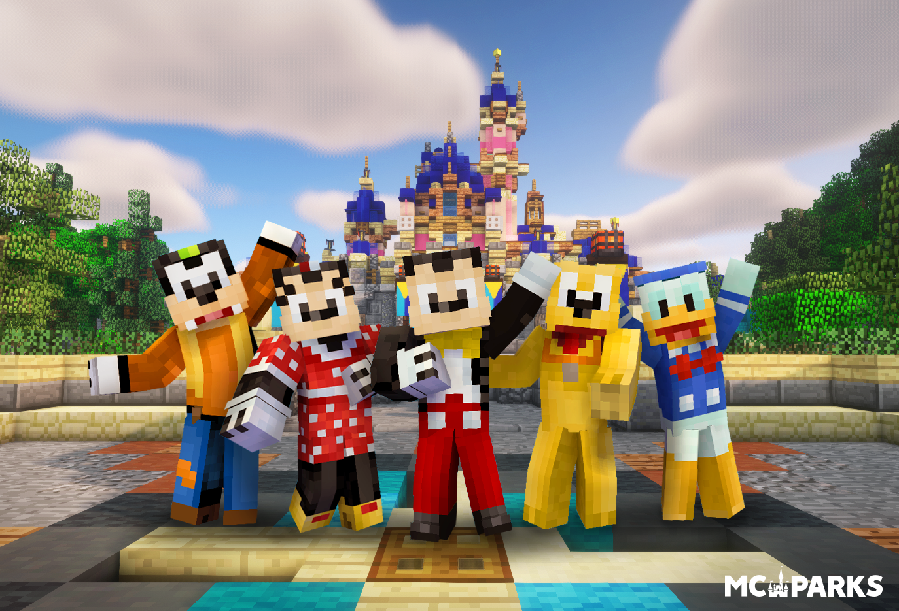
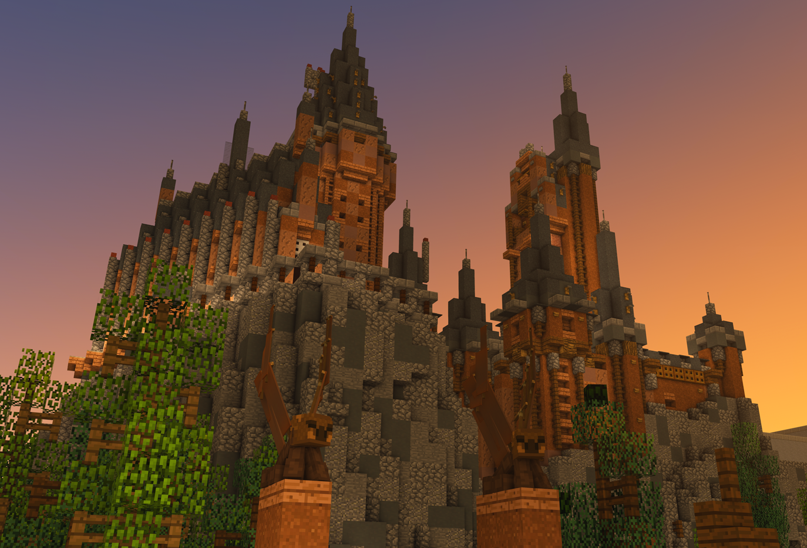
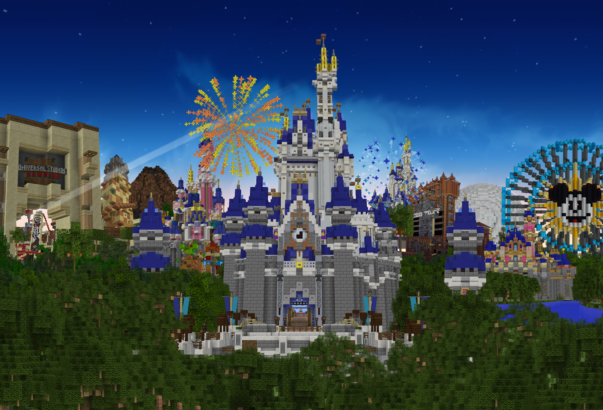
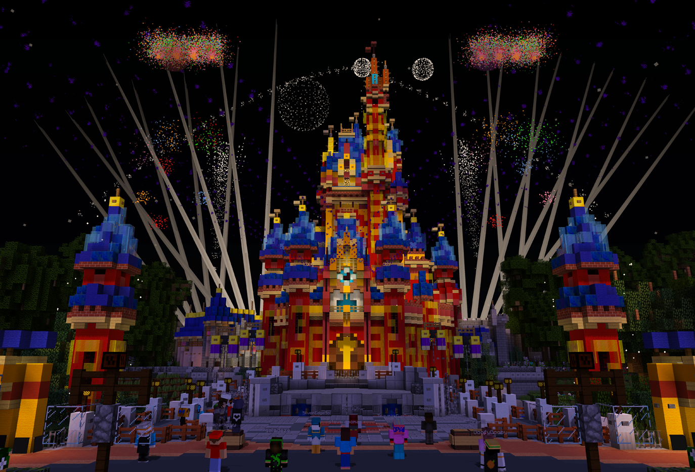
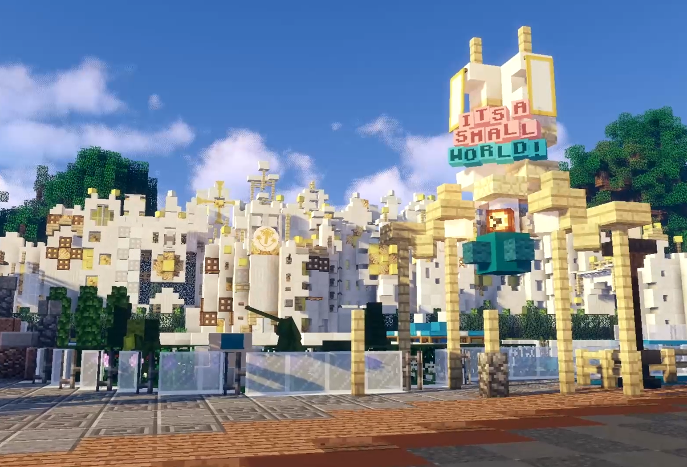
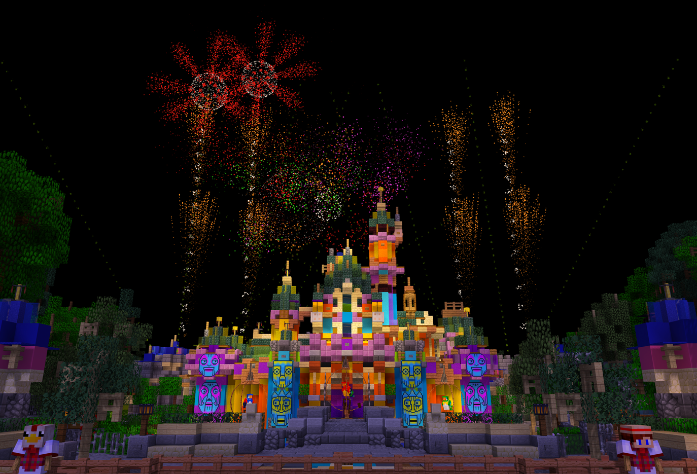
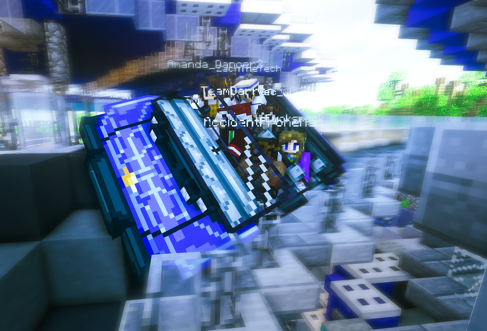

Welcome To MCParks!

Since 2013, MCParks has been dedicated to our mission to create the ultimate destination for theme parks in Minecraft. We specialize in recreating real-world theme parks and resorts (like the Walt Disney World Resort, Universal Orlando Resort, and Disneyland Resort) at a 1:1 scale within the game of Minecraft. Since April 2013, we’ve welcomed over 450,000 unique Guests, and currently staff a team of over one hundred Cast Members across many teams:
-
Imagineers
Imagineers work to construct the parks and resorts of the server. They leverage satellite imagery on Google Earth, blueprints, photos, videos, and more combined with precise measuring and trigonometry to ensure that our parks are properly built to a 1:1 scale (every block in Minecraft corresponds to one cubic meter in real life). Everything from the rides, paths, restaurants, shops, and even bathrooms are painstakingly layed out for accuracy’s sake, and we’re always updating our parks in an effort to stay up-to-date and to-scale.
-
Technicians
Not only do we boast authentic looking parks and resorts, but our attractions and shows feel authentic as well. That’s where our Technicians come in. Our techs ensure that our rides function just as realistically as they look by exploiting Minecraft’s game mechanics using open-source software and state-of-the-art custom software. Every Audio-Animatronic, firework, script, and show effect is true-to-life!
-
Guest Relations
Our Guest Relations team is dedicated to the same four keys that guide Cast Members in Disney’s real Parks: safety, courtesy, show, and efficiency. They’re our frontline team that makes sure our Guests are enjoying their stay. Between answering questions about our offerings, helping out in times of trouble, facilitating games and events, to just being someone to talk to in the game’s chat, our GR’s are sure to brighten up any Guest’s day!
-
Parks Experience
Our Parks Experience team consists of various smaller teams who each help to contribute to creating the parks!
- Pixel Artists create the Pixel Art that is seen thoughout the parks in items frames and in models.
- Resource Pack Artists create all the models in the Resource Pack including ride vehicles, merchandise, decorations and more!
- Music Production Cast Members create music and sound effects as well as design immersive audio and ambient efefcts. Ever hear the sound of a Roller Coaster while riding it? That was a Music Production Cast Memebr!
- Development Cast Members create custom software and plugins for the server. The MagicBand, Audio Server, Achievements, Daily Challenges, findables and more all come from our Developers!
- Our Branding Cast Members write, film and edit videos for use in promotional materials and our biennial MCParks Expo! Branding Cast Members also help create graphics and run Social Media accounts!
How To Join
IP address: main.mcparks.us
MCParks does not require inputting a specific port number
MCParks is a minecraft server that is offered to users playing on Minecraft Java Edition version 1.12.2 to 1.19.0. In order to join you will need to make sure you are running the correct version! The recommended version is 1.12.2 for the least buggy experience!
One you ore on the correct version, click on "Multiplayer" then click the "Add Server" button at the bottom of the page. Then enter the folloring information:
- Server Name: MCParks
- Server Address: main.mcparks.us
- Server Resource packs: Enabled or Prompt 1
Click "Done" then from the server select screen, click on MCParks to highlight it and click the "Jon Server" button
1 Note: On some computers, automatic resource-pack loading may take longer or cause Minecraft to close unexpectedly. If this happens, disable automatic downloads and follow the manual download and installation instructions.

Our Parks and Projects

MCParks currently features the following theme park properties:
- Walt Disney World Resort
- Disneyland Resort
- Universal Orlando Resort
- Disneyland Paris
- Tokyo Disney Resort
- Busch Gardens Tampa
- Knotts Berry Farm
While we primarilly focus on Theme Park recreations, we sometimes branh out into other forms of themed entertainment. Our non-theme park projects include:
- Give Kids the World Village
- Disney Cruise Line
We also have two custom parks under development:
- Explorer's Kingdom
- Discovery Bay
All of our projects are in various stages of development and not every attraction or experience at each park is open. You can view a list of all our open attractions on our website! Our long term goal is to recreate everything that exists in real life, from attractions, to resorts and everything in between!
Discord 
The MCParks Official Discord server is the primary place to find news and updates on the server, be notified about upcoming events or Meet and Greets, chat with friends, other guests or Cast Members off of the Minecraft server and more!
On the first Wednesday of every month we hold a Public Meeting, with members of our leadership, team where we share news about the upcoming month and offer updates on ongoing projects. The meetings end with a public Q&A session where you can ask questions about the server or projects.
The Discord server is also a place to share and discuss the things our community enjoys beyond MCParks itself. Talk about Disney, Universal, and theme park news, or share photos and stories from visits to the parks.

Safety

MCParks is a family-friendly Minecraft community where Guests of all ages can explore, and enjoy our parks together. Our large moderation team helps welcome Guests, answer questions, and respond to concerns. Keeping our community safe and respectful is a top priority.
Our chat filter automatically blocks many inappropriate messages as a first line of defense. We also have clear rules for chat behavior and general server expectations. Our Guest Relations Cast Members work to enforce these rules and help ensure that everyone is treated safely and respectfully, whether in chat or through their actions and skins in the game.
Minecraft also lets players change their chat settings, including disabling chat so messages aren't displayed in-game. Parents can adjust these settings to choose what works best for their family.
Audio
Enjoy immersive audio throughout many of MCParks' experiences, including ambient music and sound effects, along with soundtracks for most attractions and shows.
To get started, type /audio in chat. The server will send you a link to open in your web browser, where audio will stream based on your location in the park.
For the best experience, we recommend a reliable internet connection and a Chromium-based browser, such as Google Chrome or Microsoft Edge.

Resource Pack

Our custom resource pack brings our parks to life with unique textures and models, from ride vehicles to Mouse Ears and food.
To download it automatically in Minecraft Java Edition 1.12.2, open Multiplayer, select MCParks, and choose Edit. Set Server Resource Packs to Enabled, then join the server. You can also choose Prompt if you would rather approve the download each time you connect.
On some computers, loading the pack automatically may take too long or cause Minecraft to close unexpectedly. If this happens, change Server Resource Packs to Disabled in the server's Edit settings. After joining MCParks, type /rp in chat and open the link the server sends you to download the pack.
To install the downloaded pack in version 1.12.2:
- Keep the downloaded resource pack as a
.zipfile; do not extract it. - In Minecraft, choose Options > Resource Packs > Open resource pack folder.
- Move or copy the downloaded
.zipfile into the folder that opens, then return to Minecraft. - Select the MCParks resource pack in the available packs list and choose Done.
Note: In order to see the custom textures on clothing, you will also need a client side mod that has MCPatcher included! The easiest mod for this on version 1.12.2 is Optifine!